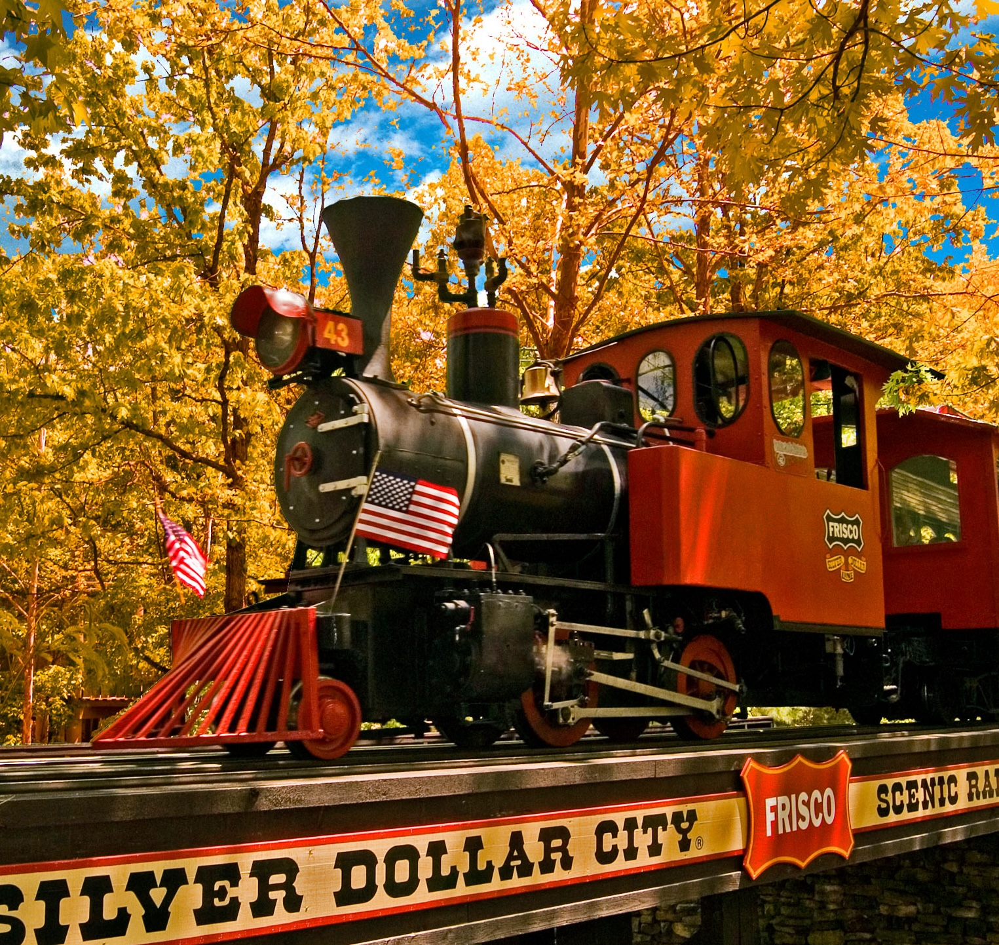

Home
Jefferson City, MO
St. Louis, MO
Branson, MO
Contact Us
Branson, MO
Population
Incorporation
Region
12,638
Apr 1, 1912
SW Missouri / Ozark Mountains
Classification
Avg. City Income
State Income
Rural with Suburban characteristics
$45,669
$61,043
